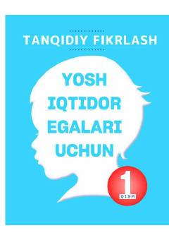

TFTanqidiy fikrlash va mantiqiy masalalarni yechish bo'yicha amaliy qo'llanma.
Ushbu qo'llanma yosh iqtidor egalari uchun tanqidiy fikrlash ko'nikmalarini rivojlantirishga qaratilgan. Kitobda mantiqiy xatolarni aniqlash, fikrlarni tahlil qilish va turli mantiqiy masalalarni yechish usullari amaliy misollar bilan tushuntirilgan.